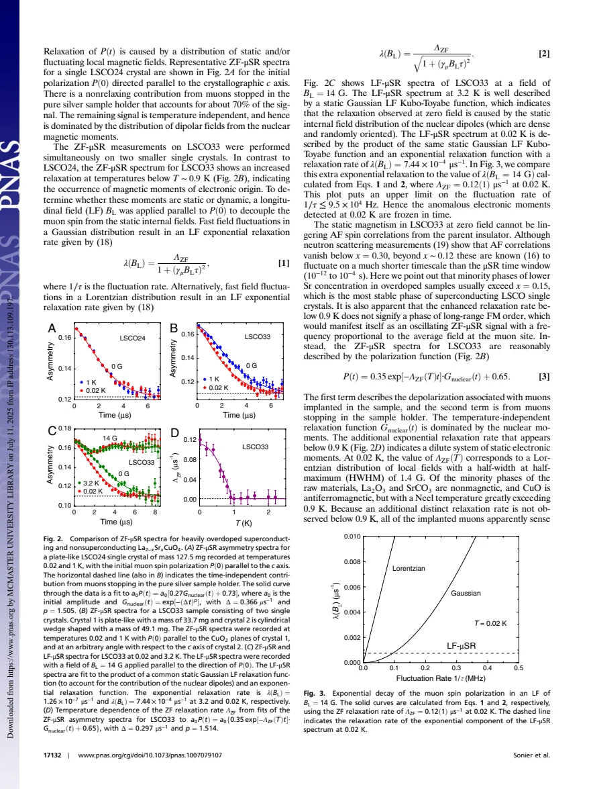
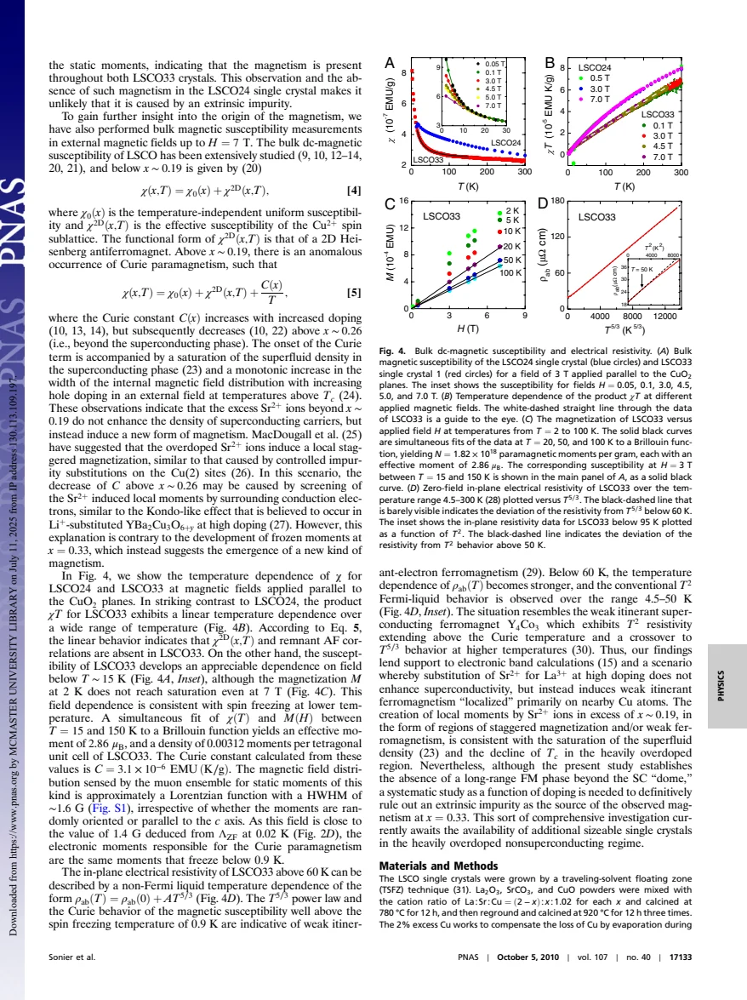

experiment · Sonier · supplied source 2010
Direct search for a ferromagnetic phase in a heavily overdoped nonsuperconducting copper oxide
Millikelvin muons detect dilute frozen moments in nonsuperconducting x = 0.33 LSCO, without establishing long-range ferromagnetic order.
The question: Does a ferromagnetic phase replace superconductivity at extreme overdoping?
Before you start: the few terms you need
- LSCO: layered La2-xSrxCuO4; nominal x is Sr per formula unit
- Local probe: a distribution can matter even when the bulk average barely changes
See → explain → test
Understand it in four pictures.
Picture 1 / 4
Go colder and farther
Look for: The important comparison is superconducting x = 0.24 against nonsuperconducting x = 0.33.
Swipe across the picture to read every label, or enlarge it below.
- x = 0.24
- x = 0.33
Teaching schematic. Source comparison down to 0.02 K; no schematic phase boundary is calibrated.
A null above 2 K does not settle a predicted subkelvin phase.
Picture 2 / 4
Decouple the compass
Look for: A small longitudinal field strongly suppresses the extra relaxation.
Swipe across the picture to read every label, or enlarge it below.
- Zero-field extra decay
- Apply 14 G along muon spin
- Relaxation suppressed
Teaching schematic. The source places an upper bound near 9.5 × 10^4 Hz on the fluctuation rate; this is a muon field-decoupling test.
The moments are frozen on the muon window under the authors' decoupling analysis.
Check the original: PDF p. 2
Picture 3 / 4
Dilute is different from uniform
Look for: A distributed set of weak local fields gives exponential relaxation rather than coherent precession.
Swipe across the picture to read every label, or enlarge it below.
- Dilute distributed moments
- Coherent uniform order
Teaching schematic. These are distinguishable ideal limits, not measured real-space spin maps.
The observation supports dilute static moments, not commensurate long-range ferromagnetism.
Check the original: PDF p. 2
Picture 4 / 4
Combine three probes
Look for: Susceptibility and transport add constraints but do not remove the impurity ambiguity.
Swipe across the picture to read every label, or enlarge it below.
- Frozen fields + Curie response
- Localized FM interpretation
- Impurity origin unresolved
Teaching schematic. Resistivity exponents alone do not identify magnetic order.
Weak localized ferromagnetism is supported as an interpretation, with extrinsic origins still open.
Predict before revealing
What does the lack of coherent oscillations together with an extra decouplable decay support?
Choose an answer, then compare the reasoning.
The extra decay detects moments. Its shape and longitudinal decoupling support a dilute slow distribution, while the source retains uncertainty about the microscopic origin.
Read the answer
A dilute frozen field distribution The extra decay detects moments. Its shape and longitudinal decoupling support a dilute slow distribution, while the source retains uncertainty about the microscopic origin.
Go deeper Follow the full argument
A search below earlier experimental limits
Sonier and collaborators investigate the idea that ferromagnetic fluctuations compete with d-wave pairing on the overdoped side and eventually freeze beyond the superconducting dome. Zero-field muons are useful because they do not require an applied magnetic field to polarize the probe. Earlier measurements above 2 K showed no static electronic moments for these high dopings. The new work extends measurements to 0.02 K. Its key comparison is LSCO x = 0.24, still superconducting, and x = 0.33, nonsuperconducting. The latter was annealed under high oxygen pressure to homogenize oxygen and showed no resistive superconductivity down to 0.1 K. Sample quality and temperature range are essential parts of the inference.
The local-field evidence for freezing
The x = 0.24 zero-field spectrum is temperature independent and dominated by nuclear fields. In x = 0.33 an extra electronic relaxation develops below roughly 0.9 K. A longitudinal field of 14 G strongly decouples this additional decay. Comparing the residual longitudinal rate with Gaussian and Lorentzian fluctuation models gives an upper fluctuation frequency near 9.5 × 10^4 Hz at 0.02 K. The moments are therefore effectively frozen on the relevant muon timescale. The spectrum includes a large nonrelaxing contribution from muons stopping in the silver holder, explicitly accounted for in the fit. Ignoring that background would corrupt both the local width and any magnetic volume interpretation.
Why the result is not a uniform ferromagnet
Commensurate long-range ferromagnetic order would normally produce a well-defined local field and coherent oscillations. The observed extra relaxation is instead approximately exponential, consistent with a dilute distribution of static moments and a Lorentzian-like field distribution. Its quoted half-width is about 1.4 G at 0.02 K. The authors argue against lingering parent-compound antiferromagnetism by considering the disappearance and fast timescale of the relevant correlations at high doping. They do not convert the lack of oscillations into a claim that every form of ferromagnetism is absent. The specific conclusion is that a long-range uniform ferromagnetic phase of the proposed kind is not established.
Bulk susceptibility checks the scale
The x = 0.33 susceptibility has a Curie component and its χT product is approximately linear over a wide temperature interval, unlike the x = 0.24 comparison. Fits combining temperature-dependent susceptibility and magnetization between about 15 and 150 K give an effective moment of 2.86 Bohr magnetons and approximately 0.00312 moments per tetragonal unit cell. These are model-dependent effective parameters, not a count of individually imaged ions. A dipole-field simulation for that dilute density gives a local width near 1.6 G, close to the muon estimate. The consistency suggests that the Curie moments and the moments freezing below 0.9 K belong to the same underlying population.
Transport support and the remaining ambiguity
The x = 0.33 in-plane resistivity follows approximately T^(5/3) above 60 K and T² over roughly 4.5 to 50 K. Together with Curie behavior, the authors interpret this as support for weak itinerant ferromagnetism localized around nearby Cu sites at high doping. Transport exponents are indirect evidence and do not determine spin orientation or prove a unique scattering channel. The paper explicitly states that an extrinsic impurity cannot be completely ruled out and that a systematic doping study requires additional large crystals. The appropriate lesson combines a secure frozen dilute local-field observation with a cautious proposed ferromagnetic origin. The missing online supporting information is not part of the supplied four-page PDF.
How to compare the evidence
The longitudinal-field control is essential to interpreting the small extra decay. A field applied along the initial muon spin can suppress relaxation from a sufficiently weak quasistatic transverse distribution, whereas rapidly fluctuating fields need not decouple in the same way. This is the role of the 14 G test, distinct from the strong transverse fields in source 26. The source then estimates a dilute-moment contribution using a spatial-field model and compares it with susceptibility. Treat that agreement as a consistency argument: moment concentration, moment size and spatial arrangement are not all independently imaged. The absence of a resolved precession also matters. Dilute frozen moments create a broad disordered distribution rather than the coherent local field expected for some uniform ordered states.
Translate the mathematics Key equations and symbol meanings
P(t) = 0.35 exp[-ΛZF(T)t] G_nuclear(t) + 0.65
Symbols: ΛZF: additional electronic relaxation; G_nuclear: nuclear-field response; 0.35 and 0.65: sample and holder fractions for the x = 0.33 fit.
Shows why the holder background must be distinguished from a nonmagnetic sample fraction.
λ(BL) = ΛZF/[1 + (γμBLτ)²]
Symbols: λ: longitudinal relaxation; BL: longitudinal applied field; τ: correlation time; γμ: muon gyromagnetic ratio.
Gaussian fast-fluctuation expression used alongside a Lorentzian alternative to constrain the slow fluctuations.
χ(T) = χ0 + χ2D(T) + C/T
Symbols: χ0: temperature-independent term; χ2D: effective antiferromagnetic contribution; C: Curie constant.
An upturn can reveal a dilute moment response; it does not alone establish a ferromagnetic transition.
Read the evidence A guided look at the original figures

Open the full original page ↗

Open the full original page ↗
What this paper does—and does not—establish
- Only the supplied main article was reviewed; online supporting information, including its Fig. S1 calculation, was absent.
- The dilute moments' intrinsic origin remains unresolved in the article.
- Source-specific x = 0.33 behavior is not generalized to all overdoped samples.
Explain it back.
Try answering aloud before opening the explanation.
Why is 0.02 K important?
It accesses freezing below the earlier 2 K limit.
Does T^(5/3) resistivity prove ferromagnetism?
No. It is supporting transport evidence interpreted with the magnetic probes.
Has an extrinsic impurity been excluded absolutely?
No. The source explicitly calls for a more systematic doping study.
Connect the next paper.
Source version, reading coverage and preservation
Complete supplied substantive text read; selected main figure and equation pages rendered and visually checked
Reviewed body pages: 1, 2, 3, 4. References not independently re-read. Online supporting information advertised by the source is absent from the supplied PDF.
Original file retained byte for byte. SHA-256: fde609b0ad4a80d061ca78c569c6ff5455c9b4ca02a774853b741472c014cb65
Filename: PNAS - Sonier - Ferromagnetic phase search in heavily overdoped LSCO - 2010.pdf.